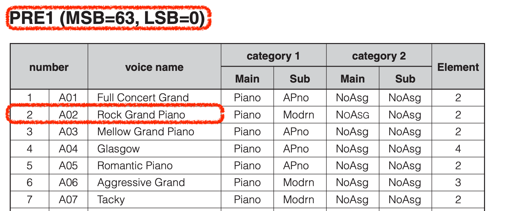
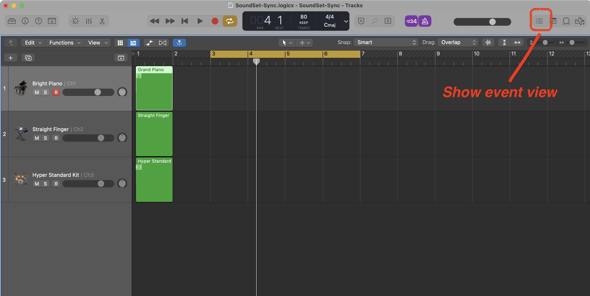
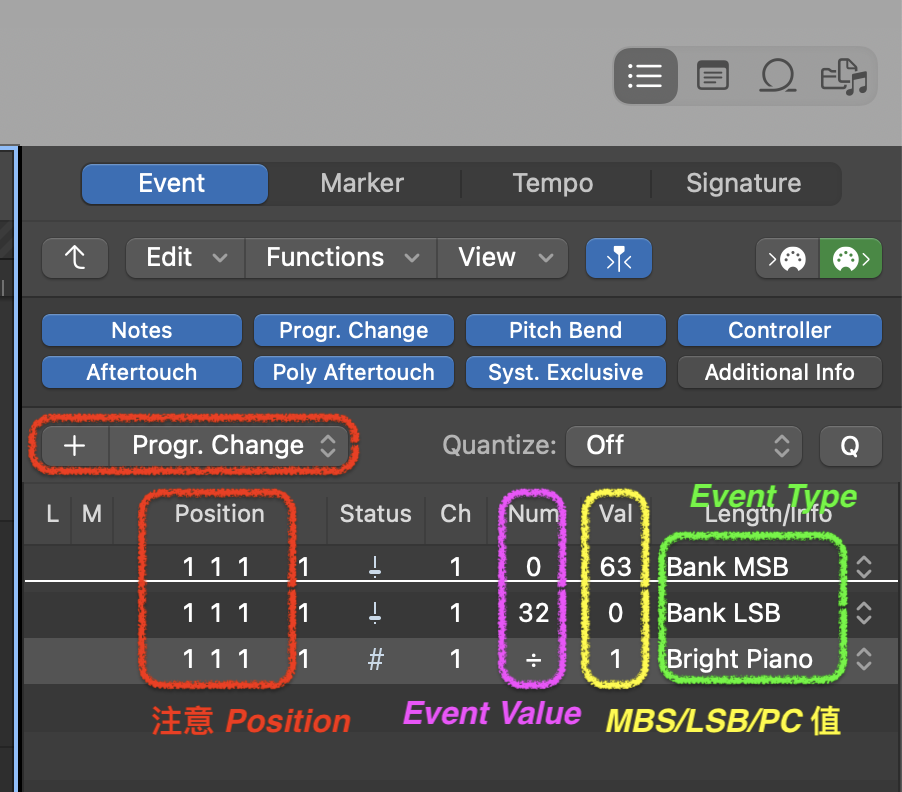
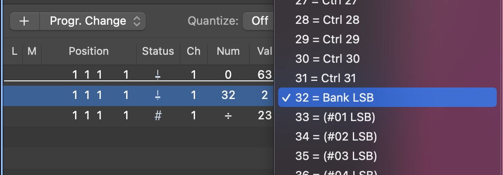

Using External MIDI Devices in Logic Pro
發布日期：2022-05-01
紀錄如何在 Logic Pro 上設定 MIDI Message，特別是 Program Change 與 Control 兩種 Message，外部設備則是 Yamaha MOTIF XS8 。
整個工作流程與驗證方式：
- 確認需要音色 (Patch)：找尋音源設備的 Data Sheet (Yamaha 稱 Data List)，找到相關音色的 MSB / LSB
- 將 Sound Module 切換到 Sequencer Mode。依照設備，名稱會有所不同，通常就是類似多軌模式、或者編曲模式之類的。
- 在 DAW 對應的 Channel 上設定初始的 Control Message
- 驗證設定正確性：重新開啟檔案，確認 Sound Module 上的音色符合設定。
這裡我使用的設備資訊如下：
Sound Module: Yamaha Motif XS8，底下簡稱 XS8DAW: Logic Pro
1. 確認需要的音色
首先就是把想要用的音色相關的 MSB / LSB 找出來，底下是我想要用的音色，以及他們的 MSB / LSB：
| Channel | Patch Name | MBS | LSB | Number |
|---|---|---|---|---|
| 1 | Rock Grand Piano | 63 | 0 | 2 |
| 2 | StraightFinger AF1&2 | 63 | 2 | 24 |
| 3 | Hyper Standard Kit | 63 | 32 | 2 |
這些資訊可以在 Sound Module 的 Data Sheet 找到，以 XS8 的資訊如下：

其中要注意的是：
- 在 Data Sheet 裡的 Number 數值對應到 MIDI Message 要減一，因為 MIDI 的 Program Change 是從 0 開始。
- MBS / LSB 則不用減一，因為 XS8 提供的數字已經是從零開始算了。
- MBS 全名
Most Significant Byte，LSB 全名Least Significant Byte，另外搭配Program Change，簡稱 PC 完成音色選擇的 MIDI Message。通常是 Sound Module 音色超過 128 個之後，就需要使用 MSB + LSB + PC 三個參數完成音色選擇。更多可以參閱 MIDI 1.0 Control Change Messages (Data Bytes)
2. 將 Sound Module 切換到 Sequencer Mode
以 XS8 為例，直接切換到琴上 Sequencer Mode 的 Song 模式，Pattern 也可以，如下圖：

這時候留意一下每個 Channel 的音色設定，如下紅色的音色，前面三個 Channel 都是 Mega Steel：

除了切換 Sequencer Mode，如果像我的是包含 Control 的 Synth，記得也切換到
Local Mode，避免重複送出 MIDI Message。XS8 切換方式：Utility -> Control -> MIDI -> Local Control -> Off
3. 在 DAW 設定 MIDI Control Message
我使用的 DAW 是 Logic Pro，依照你的 DAW 找到 MIDI 的 Event View。Logic Pro 是在畫面的右上角的，如下圖：

開啟 Event View 之後要注意現在位置 (Position) 在哪，因為等一下設定的 Event 都會直接用現在的位置。
在 Event View 裏面增加以下：
- 一個 Program Change Event
- 兩個 Control Event

這張說明要如下：
- 先選定 Event Type：
- Program Change: 就是選定那一個音色的值，Logic Pro 預設會顯示 GM 音色列表。
- Control Event: 兩個分別選擇
Bank MSB與Bank LSB。注意 LSB 選擇 32 (選單中沒有編號的)，如下圖：

- 依照步驟一整理的音色表的 MSB / LSB 數值，填入 Value 中。
- 注意 Postion 位置，建議都在每個 Channel 的一開始，除非 Channel 過程中因換音色，但我通常不建議這樣做。
4. 驗證
這時候回到琴上面，查看 Sequencer 的 Patch 會發現前面三個 Channel 音色已經改成如我們想要的音色了，如下圖：

可以試著做幾個確認：
- 改變琴上面的設定，像是載入不同音色設定，然後在 DAW 上重新載入歌曲檔案，確認琴的音色是否有被調整。
結論
我偶爾會外部硬體音源，特別有些音色對個人來說是有意義、有記憶的，就像一些吉他手會癡迷於真空管音色一樣。
雖然現在軟體音源很方便，但有時候就是想要回到以前用 Cakewalk 編曲時，直接引用外部音源，單純做 MIDI Programming 的編曲。